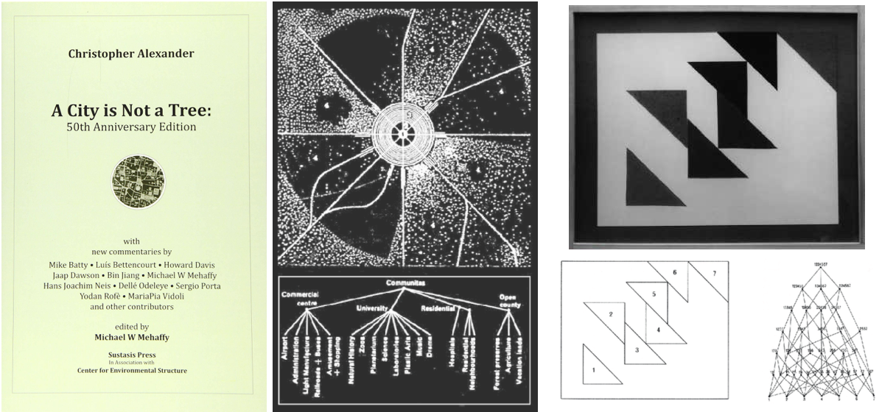

1.
Dai semi nel suolo alle stelle sopra
Tutto è stato qui sin dall'inizio
Tutto - compreso te stesso - è fatto della stessa materia
Anche tu sei qui dall'inizio
L'universo è un unico organismo
Che Balla e canta in forme sempre mutevoli
Siamo tutti ricostruzione della ricostruzione
2.
Da una prospettiva emergentistica, la ricostruzione può essere analizzata come un'interazione tra due proprietà fondamentali nel nostro mondo:-
L’emergenza (una proprietà fondamentale dei sistemi complessi)
-
Le forme come umanamente concepite
Supponiamo di essere in un giardino con qualche arabidopsis. Usi le proteine per rimuovere da loro i geni che controllano lo sviluppo dei fiori e gli dai più luce del solito. In questo modo, hai ristrutturato il processo di emergenza a livello cellulare e l'arabidopsis crescerebbe con uno stelo simile a un albero che altrimenti non si sarebbe mai visto nella specie.
Ha ricostruito più proprietà arboree, almeno microstrutturalmente

A sinistra vediamo un primo piano del fusto legnoso di una arabidopsis metamorfosata. L'immagine a destra confronta un arabidopsis metamorfosato con un normale arabidopsis fiorito.
Le immagini provengono da Melzer, Siegbert, et al. "I geni del tempo di fioritura modulano la determinazione del meristema e la forma di crescita in Arabidopsis thaliana". Nature genetics 40.12 (2008). Citato anche in "Non esiste un albero filogeneticamente" di Georgia Ray.
Gli esseri umani tendono a dare forme alle cose. Quando vediamo qualcosa che assomiglia a un albero, senza dire “questo è un albero”, nell'occhio della mente comunque emerge la nozione di albero. Se quello è un albero all'interno di un dipinto, i surrealisti potrebbero dire "ce n'est pas un arbre". Un architetto francese che l'ha sentito potrebbe pensare al saggio di Christopher Alexander del 1965 A City Is Not a Tree.
E così le immagini delle forme danzano assieme con il ritmo col quale cambia il contesto.

Qui, con un albero si riferisce ad una struttura astratta con rami (come mostrato al centro, dove una città è suddivisa in sottocategorie in un albero). A City Is Not a Tree, ampiamente considerato un documento di riferimento nel design urbano, è una critica al pensiero basato sul pattern-matching. Si sostiene che gli alberi non saranno mai onnicomprensivi come strutture più intricate ma con un costo di visualizzazione più elevato come il semi-reticolo. A destra c'è un semireticolo che valuta le relazioni tra i triangoli in un dipinto.
Le illustrazioni sono tratte da A City Is Not a Tree: 50th Anniversary Edition. Il dipinto in fotografia è il n. 6112 di Simon Nicholson, tratto da "Systems in Play: Simon Nicholson's Design 12 Course, University of California, Berkeley, 1966".
Allo stesso modo in cui gli architetti scelgono il glamour per capire i sistemi complessi che occupano il mondo umano, i surrealisti a loro volta sono più interessati all'assurdità della realtà e dei sogni. Mentre un architetto, illuminato dalla lettura di A City is Not a Tree (Una città non è un albero) può essere invogliato a ricostruire i propri pensieri mentre discerne i sistemi a volo d'uccello, un surrealista d'altra parte può essere tentato di allentare la stessa definizione di ricostruzione di cui sopra.
Forse dovremmo comprendere anche le forme non umanamente concepite, pensò il surrealista. E così la nostra nuova definizione diventa:
... La ricostruzione può essere sezionata come un'interazione tra:
-
emergenza (una proprietà fondamentale di sistemi complessi)
-
e tutte le forme (umanamente e non umanamente concepite)
Voilà! Facendo così, possiamo iniziare a vedere la ricostruzione intorno a noi, la maggior parte della quale non é concepibile. Da ogni senso da cui traiamo esperienza fino ad ogni divisione delle nostre cellule, da ogni supernova di stelle morenti fino a tutte le vibrazioni di molecole mai esistite … Sistemi di origine ignota e senza nome sono stati ricostruiti in modi che non capiamo.
Nell'antica filosofia orientale lo chiamiamo il Tao. Nel kantismo ci traduciamo come il mondo noumenale. O come Stephen Hawking (dopo aver proclamato che la filosofia è morta nel 2010) lo metterebbe, effetti collaterali di un realismo dipendente da un modello.
Tra questi, forse il più grande e il più misterioso di tutti, è la ricostruzione perpetua e costante del presente nel tempo di Planck che dà la comparsa di continuità ininterotta alla mente cosciente che naviga e sperimenta il mondo.
Tempo di Planck (circa 10-44 secondi, derivato dal principio di incertezza di Heisenberg) è il periodo di tempo nel quale nessuna minore significativa lunghezza può essere misurata teoricamente. È congetturato che la struttura del tempo si rompe in intervalli più piccoli del tempo di Planck.
Ma questa non è una simulazione. Descrivere la realtà in questo modo tradirebbe le parole di per sé, poiché la parola simulazione invoca un senso di non-"realtà".
Amore mio, tutto questo è reale! Questa è una ricostruzione di tutto ciò che è mai esistito. Siamo nella musica in questo momento.